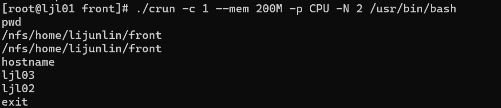

crun 提交交互式任务
crun使用命令行指定的参数申请资源并在计算节点启动指定的任务，用户的输入将被转发到计算节点上对应的任务，任务的输出将被转发回用户终端。crun需要在有cfored运行的节点上启动。
crun只支持通过命令行指定请求参数，支持的命令行选项：
- --help/-h：显示帮助
- -A, --account string：提交作业的账户
- --chdir string：任务工作路径
- -C, --config string：配置文件路径(默认 "/etc/crane/config.yaml")
- -c, --cpus-per-task float：每个节点申请的CPU核心数
- -J, --job-name string：作业名
- --mem string：每个节点申请的内存大小
- -N, --nodes uint32：申请的节点数量
- --ntasks-per-node uint32：每个节点上运行的任务数量
- -p, --partition string：作业使用的分区/队列
- -Q, --qos string：指定作业使用的qos名称-
- -t, --time string：作业的最长运行时间
- -w, --nodelist：提交作业到指定节点运行
- -x, --exclude：提交的作业排除某些指定节点运行
- -D, --debug-level：日志输出等级
在一秒内两次ctrl+c发送sigint信号、使用ccancel取消任务、或者节点上的任务进程退出会结束任务。
在CPU分区，申请两个节点，一个CPU核心，200M内存，并运行bash程序：
crun -c 1 --mem 200M -p CPU -N 2 /usr/bin/bash
运行结果： 
crun还可以在calloc任务内嵌套启动，将自动继承calloc任务的所有资源。不需要指定除需要运行的程序外其他参数。